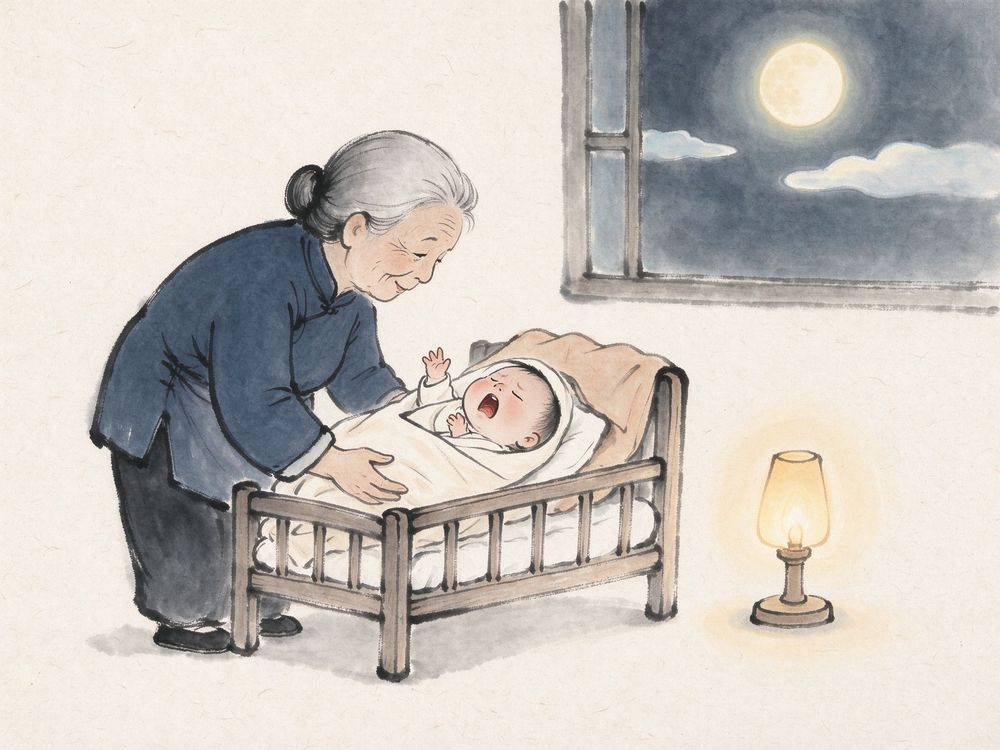

第 一 课
人之初，性本善。
rén zhī chū xìng běn shàn
① 先读右列
rén
人
二画
zhī
之
三画
chū
初
七画
② 再读左列
xìng
性
八画
běn
本
五画
shàn
善
十二画
先 ↓ 右列 再 ← 左列
古法竖排：自右而左，自上而下。先读右列「人之初」，再读左列「性本善」，每列从上往下。
初是刚出生的那一刻 · 性是天生带来的本心 · 善是愿意体谅别人
少儿共读读给孩子听
先讲一件很小很小的事。小到你可能已经记不起来，但每一个人都经历过。
小宝宝刚来到这个世界，还不会说话。他不知道该怎么开口告诉你：“我饿了”“尿布湿了”“肚子有点胀”“我好困，想睡觉”。他只会一件事——哭。
夜里灯还亮着一盏，小小的婴儿床里，宝宝张开嘴哭起来，两只小手往上举着，好像在找什么。奶奶听见了，弯下身子，把他轻轻抱进怀里，拍一拍，哄一哄。奶来了，尿布换了，怀里暖暖的，宝宝慢慢安静下来，眼睛闭着，睡着了。

就在这样一次又一次的哭声和拥抱里，宝宝学会了第一件大事：我是被爱的。难受的时候，会有人来；害怕的时候，会有人抱着。这份暖，是很小很小的他心里，第一块安稳的地方。
可是，还有一件更奇妙的事。
院子里，一个小哥哥跑着跑着，摔倒了，“咚”地坐在地上，膝盖蹭破了，疼得哭出声来。旁边站着一个三四岁的小姐姐，她自己没有摔，身上一点都不疼。可是她看着小哥哥哭，眉毛也垂了下来，眼睛里也慢慢积起了眼泪。

她伸出一只手，要去拉他起来。另一只手，紧紧攥着自己的衣角。
这就是我们说的善良的种子：别人难过，我心里也跟着难过；别人需要，我想伸一伸手。它不用谁教，是每一个孩子生下来就带着的。
当然，善良不是叫我们委屈自己。好好吃饭、好好睡觉、冷了就穿衣、害怕了就找大人——把自己照顾好，也是顶重要的事。善良是：我照顾我自己，也看得见别人。
而如果为了自己开心，去抢别人的玩具、推倒别人、故意让别人疼，那就不是善良了。这一点，要记牢。
生下来就带着的四样宝贝
良知 · 自我意识 · 想象力 · 独立意志
良知
别人疼，我也疼。
心里那盏会自动亮的小灯。
心里那盏会自动亮的小灯。
自我意识
镜子里那个是我。
知道“我”和“别人”不一样。
知道“我”和“别人”不一样。
想象力
在心里演一遍：
如果是我，会多疼、多怕。
如果是我，会多疼、多怕。
独立意志
往哪边走，
最后是我自己决定的。
最后是我自己决定的。
成 长 小 启 示
- 先照顾好自己：吃饱、睡足、冷了就加衣，不舒服就告诉大人。
- 看见别人难过时，停一停，看看他的脸，想一想他的心情。
- 力所能及就伸一把手：递一张纸、扶一下、说一句“你还好吗”。
- 不为了自己开心去抢、去推、去让别人疼。
给 爸 爸 妈 妈 的 一 句 话
这一课不需要孩子背下“性本善”三个字的意思。请在真实场景里指给他看：他为别人掉眼泪的那一刻，轻轻说一句“你心里真软”。被看见的善，才会长大。
— 2 —